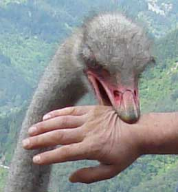
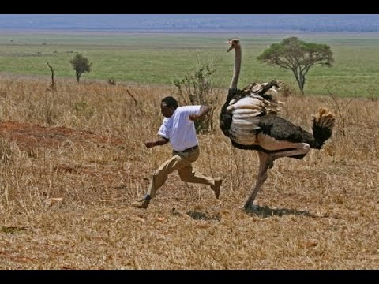

Why Ostriches are spawns of Satan
The truth uncovered
Where they dwell
They are found most commonly in various regions of Africa and even in the middle east.Pro-Ostrich propoganda

Prefered killing method
Ostriches use their powerful legs to carry out their plan of mass destruction. With a 10-cm (4-in.) talon on each foot, their downward kicks can cause serious harm to potential predators.How an Ostrich almost killed a beloved icon

How to save your life from an ostrich attack
- If being charged, run for cover by hiding or getting to a high area.
- If you cant run, use a long weapon and go for the neck, wings or legs while staying on it's side.
- To avoid ostriches, do not walk in open landscapes where ostriches may roam, avoid close contact and beware of ostrich breeding season. They are more homicidal during this season.
©H.P.A.O (human protection against ostriches) 2017 Learn about the evil distant relative of the Ostrich EMU:Ostrich evil brother? Lions: Seperate threat or accomplice to Ostrich world domination? Evil doesnt only use two legs Most popular vacation spots for 2017! Best vacation spots!